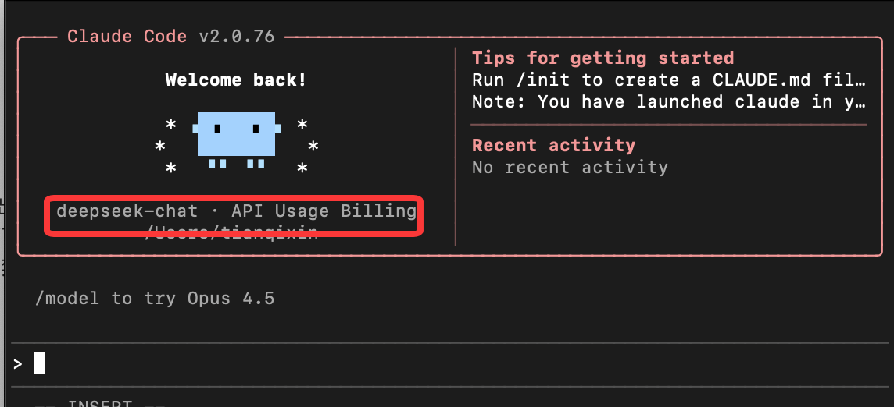
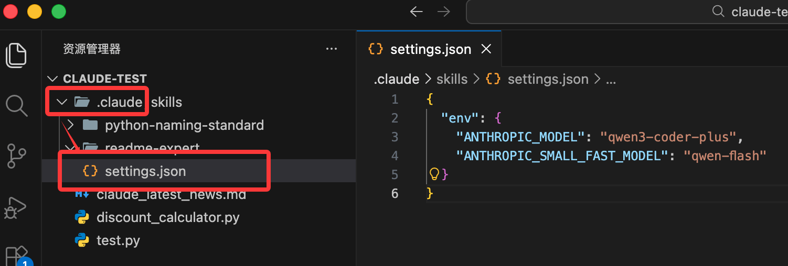
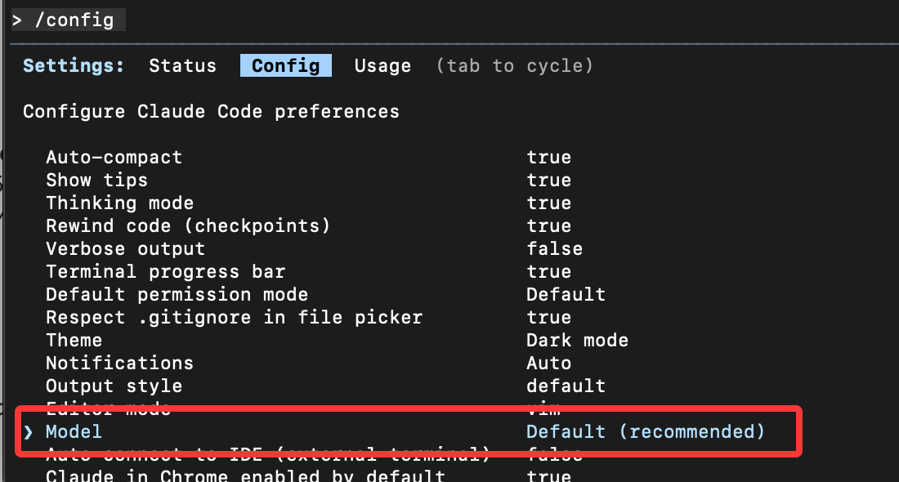
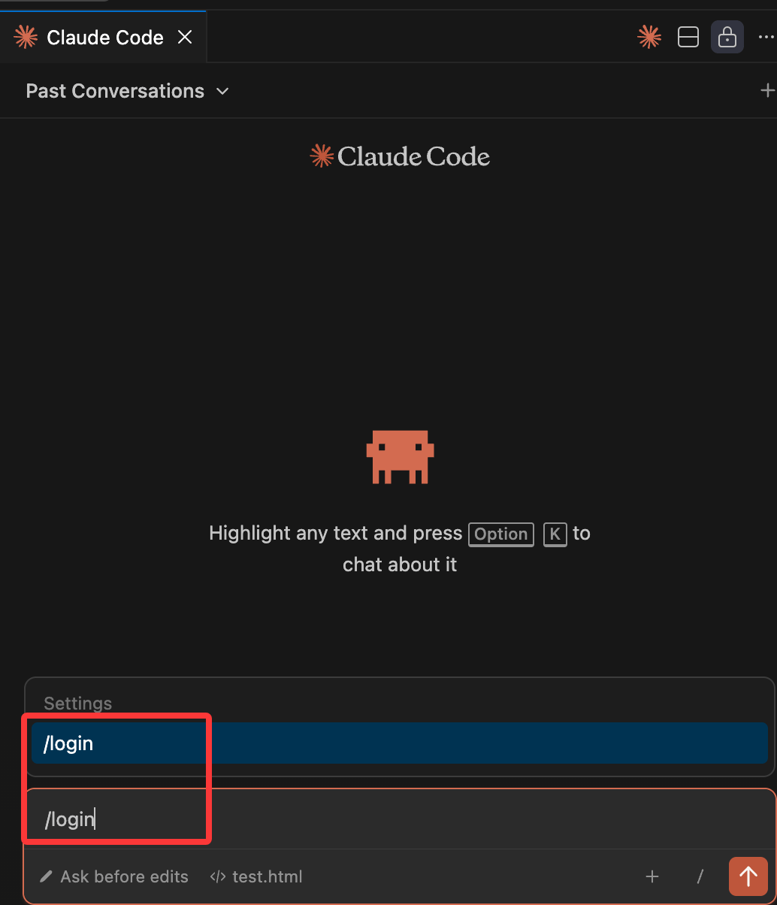

Tutorial de introducción a Claude Code
Claude Code es la herramienta de agente oficial de Anthropic a nivel de CLI.
El posicionamiento de Claude Code no es el chat, sino ejecutar tareas de ingeniería de alto nivel de permisos y con conciencia del contexto en el repositorio de código local.
Claude Code es un agente, no un chat.
Consulte el tutorial detallado en:https://www.example.com/claude-code/claude-code-tutorial.html
Capacidades principales:
- Leer directamente todo el directorio del proyecto
- Comprender la estructura real del código
- Ejecutar modificaciones en múltiples archivos
- Seguir estrictamente las instrucciones en lugar de complacer mediante la conversación

Instalación y configuración
MacOS/Linux:
curl -fsSL https://claude.ai/install.sh | bash
Homebrew (MacOS):
brew install --cask claude-code
Windows:
irm https://claude.ai/install.ps1 | iex
NPM:
Instalación con npm: asegúrese de que su sistema tenga Node.js instalado, con una versión v18 o superior.
npm install -g @anthropic-ai/claude-code
A continuación, puede entrar en el directorio del proyecto que haya creado y comenzar a usar Claude Code:
cd your-project claude
Inicie sesión en su cuenta
Al usar el comando `claude` para iniciar una sesión interactiva, deberá iniciar sesión:
claude # 首次使用时会提示您登录 /login # 按照提示使用您的账户登录

Si puede usar una cuenta de Anthropic normalmente, puede comenzar a usarlo; si no, fuera de China puede usar DeepSeek o GLM, etc.
Conexión de DeepSeek a Claude Code
Después de instalar Claude Code, configuramos las siguientes variables de entorno en la terminal:
export ANTHROPIC_BASE_URL=https://api.deepseek.com/anthropic export ANTHROPIC_AUTH_TOKEN=<你的 DeepSeek API Key> export ANTHROPIC_MODEL=deepseek-v4-pro[1m] export ANTHROPIC_DEFAULT_OPUS_MODEL=deepseek-v4-pro[1m] export ANTHROPIC_DEFAULT_SONNET_MODEL=deepseek-v4-pro[1m] export ANTHROPIC_DEFAULT_HAIKU_MODEL=deepseek-v4-flash export CLAUDE_CODE_SUBAGENT_MODEL=deepseek-v4-flash export CLAUDE_CODE_EFFORT_LEVEL=max
Descripción de parámetros:
CLAUDE_CODE_EFFORT_LEVEL: profundidad de razonamiento, opciones: low / medium / maxANTHROPIC_MODEL: especifica usar el modelo deepseek-v4-pro[1m]CLAUDE_CODE_DISABLE_NONESSENTIAL_TRAFFIC=1: deshabilita tráfico no esencial
Luego entre en el directorio del proyecto y ejecute el comando `claude` para comenzar a usarlo.
cd my-project claude

Documentación de referencia:https://api-docs.deepseek.com/zh-cn/guides/anthropic_api
Conexión de Alibaba Bailian a Claude Code
Los modelos de la serie Qwen de Tongyi de Alibaba Cloud Bailian son compatibles con la interfaz compatible con la API de Anthropic. Modificando los siguientes parámetros, puede invocar los modelos de la serie Qwen de Tongyi en Claude Code.
ANTHROPIC_API_KEY (o ANTHROPIC_AUTH_TOKEN): reemplácelo con la API Key de Bailian, dirección de solicitud:https://bailian.console.aliyun.com/cn-beijing/?tab=model#/api-key。
-
ANTHROPIC_BASE_URL: reemplácelo con la dirección del endpoint compatible de Bailianhttps://dashscope.aliyuncs.com/apps/anthropic。
-
Nombre del modelo: reemplácelo con el nombre del modelo compatible con Bailian (por ejemplo, qwen3-max, qwen3-coder-plus, etc.)
macOS/Linux：
Cree y abra el archivo de configuración~/.claude/settings.json。
~representa el directorio principal del usuario; si.claudeel directorio no existe, debe crearlo primero; puede ejecutar en la terminalmkdir -p ~/.claude para crearlo.
Edite el archivo de configuración:
vim ~/.claude/settings.json
Reemplace YOUR_API_KEY con su API Key exclusiva.
{
"env": {
"ANTHROPIC_AUTH_TOKEN": "YOUR_API_KEY",
"ANTHROPIC_BASE_URL": "https://dashscope.aliyuncs.com/apps/anthropic",
"ANTHROPIC_MODEL": "qwen3-coder-plus"
}
}
Abra una nueva terminal para que la configuración de variables de entorno surta efecto.
Windows：
Ejecute el siguiente comando en CMD para configurar las variables de entorno:
setx ANTHROPIC_AUTH_TOKEN "YOUR_API_KEY" setx ANTHROPIC_BASE_URL "https://dashscope.aliyuncs.com/apps/anthropic" setx ANTHROPIC_MODEL "qwen3-coder-plus"
Reemplace YOUR_API_KEY con la API Key exclusiva del plan.
Abra una nueva ventana de CMD y ejecute el siguiente comando para verificar si las variables de entorno están activas.
echo %ANTHROPIC_AUTH_TOKEN% echo %ANTHROPIC_BASE_URL% echo %ANTHROPIC_MODEL%
Ejecute el siguiente comando en PowerShell para configurar las variables de entorno:
# 用套餐专属 API Key 替换 YOUR_API_KEY
[Environment]::SetEnvironmentVariable("ANTHROPIC_AUTH_TOKEN", "YOUR_API_KEY", [EnvironmentVariableTarget]::User)
[Environment]::SetEnvironmentVariable("ANTHROPIC_BASE_URL", "https://dashscope.aliyuncs.com/apps/anthropic", [EnvironmentVariableTarget]::User)
[Environment]::SetEnvironmentVariable("ANTHROPIC_MODEL", "qwen3-coder-plus", [EnvironmentVariableTarget]::User)
Abra una nueva ventana de PowerShell y ejecute el siguiente comando para verificar si las variables de entorno están activas.
echo $env:ANTHROPIC_AUTH_TOKEN echo $env:ANTHROPIC_BASE_URL echo $env:ANTHROPIC_MODEL
Conexión de los modelos de la serie Qwen de Tongyi en Claude Code
Durante la conversación, ejecute/model <nombre del modelo>comando para cambiar de modelo.
/model qwen3-coder-plus
También puede crear en el directorio raíz del proyecto.claude/settings.jsonen el archivo, y escribir la información de configuración del modelo para una configuración permanente.

{
"env": {
"ANTHROPIC_MODEL": "qwen3-coder-plus",
"ANTHROPIC_SMALL_FAST_MODEL": "qwen-flash"
}
}
Al iniciar Claude, puede ver la información de configuración:

Conexión de los modelos grandes de Zhipu a Claude Code
En esta sección usamos el archivo ~/.claude/settings.json para configurar el modelo grande. Antes de comenzar, debe obtener la API key en la plataforma oficial:GLM Coding Plan。
Edite o agregue el archivo de configuración de Claude Code ~/.claude/settings.json, y agregue o modifique el campo env dentro de él.
# 注意替换里面的your_zhipu_api_key 为您上一步获取到的 API Key
{
"env": {
"ANTHROPIC_AUTH_TOKEN": "your_zhipu_api_key",
"ANTHROPIC_BASE_URL": "https://open.bigmodel.cn/api/anthropic",
"API_TIMEOUT_MS": "3000000",
"CLAUDE_CODE_DISABLE_NONESSENTIAL_TRAFFIC": 1
}
}Ejecute `claude` para iniciar Claude Code e ingrese/statuspara confirmar el estado del modelo:

Si no es así, puede ingresar/configpara cambiar de modelo.

Cuando hay muchos modelos grandes, la configuración se vuelve engorrosa. Puede usar la herramienta de terceros CC Switch que nos ayuda a gestionar fácilmente las configuraciones de API de estas herramientas populares:https://github.com/farion1231/cc-switch/, compatible con Windows / macOS / Linux.
Direcciones de descarga de los paquetes de instalación para cada plataforma:https://github.com/farion1231/cc-switch/releases。


Instalación de Claude Code en VS Code
Si no le gusta usar el modo de línea de comandos de Claude Code, podemos instalar Claude Code en el editor VS Code.
Abra VS Code, vaya al mercado de extensiones y busqueClaude Codee instale:

Una vez completada la instalación, haga clic en el icono de Claude Code en la esquina superior derecha para entrar en la página de Claude Code:

Así, si tiene una cuenta, puede usar /login para iniciar sesión:

También puede ingresar /config en el cuadro de diálogo para entrar en la configuración, y marcar la opción Disable Login Prompt para desactivar la página de inicio de sesión:

Referencia de comandos relacionados
Lista de comandos integrados de Claude Code
| Comando | Descripción |
|---|---|
/add-dir |
Agregar un directorio de trabajo adicional |
/agents |
Gestionar subagentes de IA dedicados |
/bashes |
Listar y gestionar tareas en segundo plano |
/bug |
Reportar errores (enviar la conversación a Anthropic) |
/clear |
Borrar el historial de conversación |
/compact [指令] |
Comprimir la conversación, con opción de agregar instrucciones clave |
/config |
Abrir la interfaz de configuración (pestaña de configuración) |
/context |
Visualizar el uso actual del contexto en una cuadrícula de colores |
/cost |
Mostrar estadísticas de uso de tokens |
/doctor |
Verificar el estado de salud de la instalación de Claude Code |
/exit |
Salir del REPL |
/export [文件名] |
Exportar la conversación actual a un archivo o portapapeles |
/help |
Obtener ayuda de uso, mostrar todos los comandos disponibles |
/hooks |
Gestionar la configuración de hooks de eventos de herramientas |
/ide |
Gestionar las integraciones con IDE y mostrar el estado |
/init |
Inicializar el proyecto con la guía CLAUDE.md |
/install-github-app |
Configurar Claude GitHub Actions para el repositorio |
/login |
Cambiar de cuenta de Anthropic |
/logout |
Cerrar sesión de la cuenta de Anthropic |
/mcp |
Gestionar conexiones de servidores MCP y autenticación OAuth |
/memory |
Editar el archivo de memoria CLAUDE.md |
/model |
Seleccionar o cambiar el modelo de IA |
/output-style [样式] |
Configurar directamente el estilo de salida o seleccionarlo desde el menú de selección |
/permissions |
Ver o actualizar permisos |
/plugin |
Gestionar los plugins de Claude Code |
/pr-comments |
Ver comentarios de PR |
/privacy-settings |
Ver y actualizar la configuración de privacidad |
/release-notes |
Ver las notas de la versión |
/resume |
Restaurar conversación |
/review |
Solicitar revisión de código |
/rewind |
Revertir conversación y/o código |
/sandbox |
Habilitar la herramienta bash en modo sandbox, con aislamiento de sistema de archivos y red |
/security-review |
Realizar una revisión segura de los cambios pendientes en la rama actual |
/status |
Abrir la interfaz de configuración (pestaña de estado), mostrando versión, modelo, cuenta y estado de conexión |
/statusline |
Configurar la UI de la barra de estado de Claude Code |
/terminal-setup |
Instalar el enlace de tecla Shift+Enter para nueva línea (solo en iTerm2 y VSCode) |
/todos |
Listar las tareas pendientes actuales |
/usage |
Mostrar los límites de uso del plan y el estado de límites de velocidad (solo planes de suscripción) |
/vim |
Entrar en modo vim, alternando entre modo inserción y modo comando |
Tipos de comandos personalizados
| Tipo de comando | Ubicación | Descripción |
|---|---|---|
| Comandos de proyecto | .claude/commands/ |
Almacenados en el repositorio, compartidos con el equipo |
| Comandos personales | ~/.claude/commands/ |
Disponibles en todos los proyectos |
| Comandos de plugin | Del plugincommands/Tabla de contenido |
Distribución a través del mercado de plugins |
| Comandos MCP | Proporcionado por el servidor MCP | Formato:/mcp__<服务器名>__<提示名> |
Comandos de shell (fuera de la sesión)
| Comando | Descripción |
|---|---|
claude |
Iniciar una sesión interactiva de Claude Code |
claude -p "查询" |
Modo no interactivo: imprime el resultado y sale |
claude --dangerously-skip-permissions |
Omitir todas las comprobaciones de permisos (modo peligroso) |
claude --debug |
Habilitar el modo de depuración |
claude --mcp-debug |
Modo de depuración de MCP |
claude mcp add |
Añadir servidor MCP |
claude mcp list |
Listar los servidores MCP configurados |
claude mcp remove |
Eliminar servidor MCP |
Funciones especiales
Soporte de comandos personalizados:
$ARGUMENTS- Capturar todos los parámetros$1, $2, $3...- Acceder a parámetros posicionales individuales@nombre de archivo- Referenciar el contenido de archivos!comando- Ejecutar comandos bash e incluir la salida
Metadatos frontmatter del comando:
allowed-tools- Lista de herramientas que el comando puede utilizarargument-hint- Descripción de las sugerencias de parámetrosdescription- Descripción breve del comandomodel- Especificar el modelodisable-model-invocation- Evitar llamadas a herramientas de SlashCommand
Para obtener más información relacionada, puede/helpconsultar la lista completa de comandos disponibles (incluidos sus comandos personalizados).
Recursos relacionados
-
Tutorial de Claude Code:https://www.example.com/claude-code/claude-code-tutorial.html
-
Dirección del código abierto:https://github.com/anthropics/claude-code
Documentación oficial:https://code.claude.com/docs/zh-CN/overview
DeepSeek Anthropic API：https://api-docs.deepseek.com/zh-cn/guides/anthropic_api
Integración del gran modelo de Zhipu con Claude Code:https://docs.bigmodel.cn/cn/coding-plan/tool/claude#claude-code